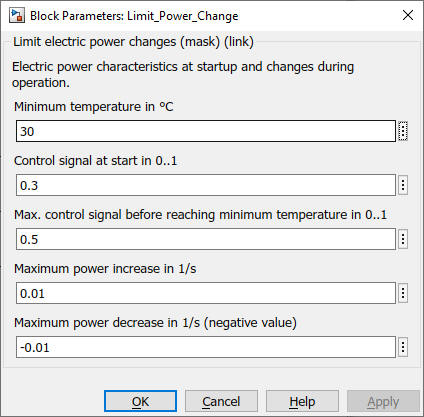

Limit_Power_Change
Path: CARNOT/Control
Purpose:
Limit a control signal to the boundary conditions of power change during
startup.
Description:
The block limits an incomming signal during startup:
Input:
| ctrl | : | control signal input |
| Ts | : | measured temperature (typically the supply temperature) in °C |
Output:
| Ctrl | : | control signal output |
Parameters and Dialog Box:

Examples:
Open the example explorer from the Matlab command window
ExampleBrowser
or load the examples via the CARNOT library.
Characteristics:
| Direct Feedthrough | : | Yes |
| Sample Time | : | Inherited from driving block |
| Vectorized | : | No |